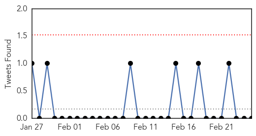
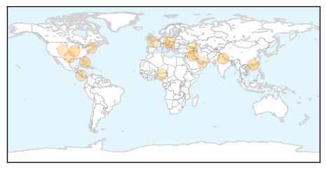

Toggle navigation
Early Warning
Daily Alerts
Influenza
Feb 25, 2015
Compare to:
-
Dengue Fever
Hemmorhagic Fever
Mold/Fungal Infection
Meningitis
Pertussis / Whooping Cough
Middle East Respiratory Syndrome
Cholera
Hepatitis
Chikungunya
Yellow Fever
Bubonic Plague
West Nile Virus
Swine Flu
Ebola
Measles
Unknown
Mumps
30 Day Trends
Web: 0
alerts
, 0
warnings
Twitter: 0
alerts
, 0
warnings
Top Articles:
0.997
Flu cases continue to rise in El Paso
0.996
841 deaths so far due to swine flu, over 14000 affected: J P Nadda
0.995
Austria 'on threshold of flu outbreak'
0.987
Hong Kong girl, 8, tests negative for Middle East respiratory syndrome
0.961
Vaccination programmes
0.932
Viruses Increasingly Behind Child Pneumonia Cases
0.773
Get your flu vaccinations here! -The Tico Times
0.751
February 25, 2015 Archives
0.751
February 24, 2015 Archives
0.751
February 24, 2015 Archives
0.751
February 24, 2015 Archives
0.710
Avian flu kills 10,000 birds in Katsina
0.640
Influenza A outbreak declared at Midland's Georgian Bay General Hospital
0.608
UAE employees must be taught better hygiene practices
Top Tweets:
No tweets found for Feb 25, 2015
Web/News Articles
Tweets

Article Locations

Article Confidences